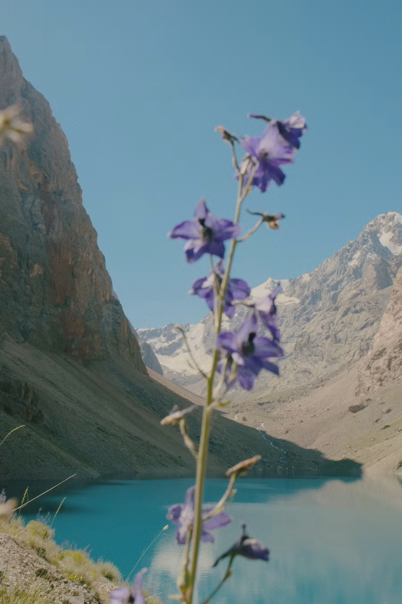
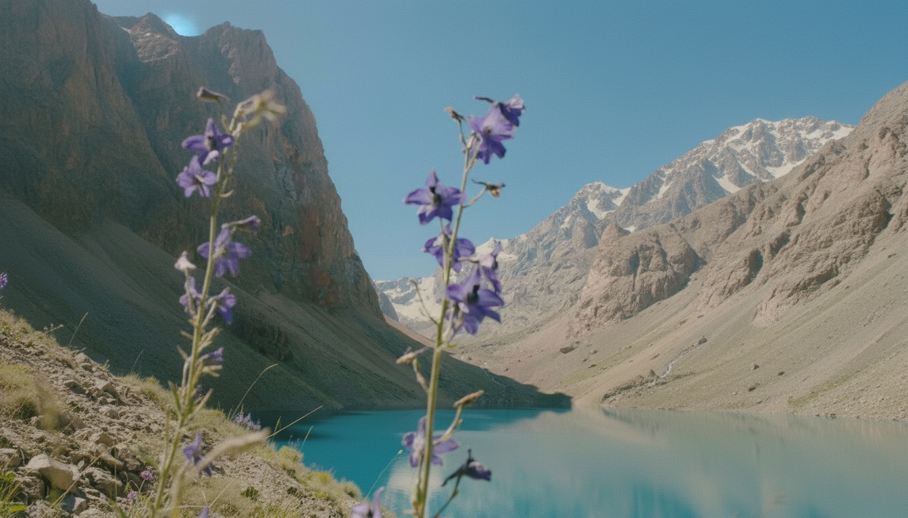

共有資料の一覧
／ 確認ページ #588 花・湖・山の写真から、微動ループ動画＋環境音を作りました
#588 花・湖・山の写真から、微動ループ動画＋環境音を作りました
2026-09-06 実装・main合流・本番(GitHub Pages)反映まで実測確認
紫の花・湖・山の縦写真を16:9へ自然に拡張し、8秒の微動ループ動画（カメラ完全固定・花と草だけがそよぐ・山と湖は静止）と22秒の環境音（風・遠い鳥の声、音楽も声もなし）を作成。85点以上だったので10分版・30分版のループ書き出しまで完了。
② 数字
$0.59
fal実測概算(画像1+動画1+音声1)
約89円
円換算(150円/ドル概算・予算200円以内)
90点
微動ループの出来
3回
有料実行の回数
③ 前と後（実データでのスクリーンショット）
元の縦写真(花・湖・山)

16:9に拡張後(この1枚を動画化)

④ 押せるリンク
8秒ループ動画(元)を開く
https://v3b.fal.media/files/b/0aa957b0/8zlk05S_jhS0YbipI71zp_zDhuX47i.mp4
22秒環境音(元)を開く
https://v3b.fal.media/files/b/0aa957bc/PQ2p6ZXqT-6eV9aZIZvpX_qNwFtvAv.wav
⑤ 何をどう確かめたか
確認項目
結果
縦→16:9の自然な拡張
できた
カメラ固定・花だけそよぐ(8秒ループ)
できた
環境音22秒(音楽・声なし)
できた
10分ループ版
できた(Google Drive/fal test/OUTPUTへ保存)
30分ループ版
できた(Google Drive/fal test/OUTPUTへ保存)